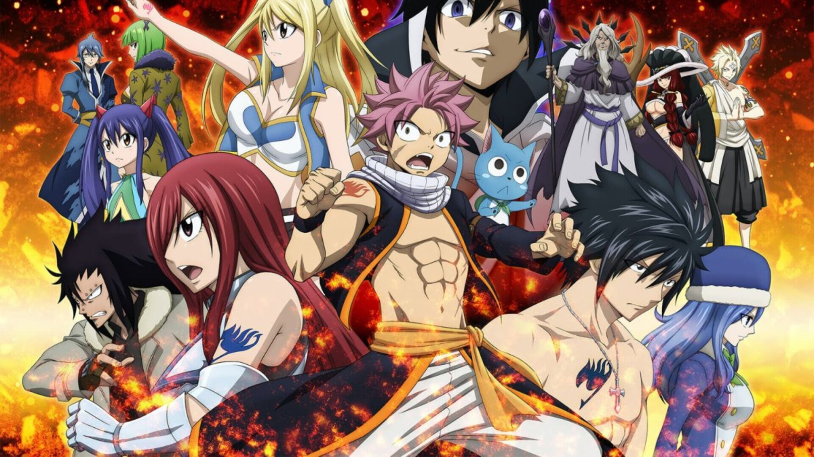

El Origen
AUTOR
Hiro Mashima (真島ヒロ Mashima Hiro?), nació el 3 de mayo de 1977 en Nagano, Japón, es un mangaka japonés principalmente conocido por ser el creador del manga Fairy Tail, un manga de fantasía publicado por Kōdansha en la Weekly Shōnen Magazine en el año 2006. El manga sería adaptado a anime, y se finalizó ya la tercera y última temporada. Cuando solo tenía 21 años, realizó su primera obra de larga duración, el manga Rave Master. Fue publicado por la editorial Kōdansha en la Weekly Shonen Magazine entre 1999 y 2005. La serie más tarde fue adaptada en una serie de anime, pero finalmente fue cancelada. En 2014 se lanzó la revista mensual titulada Monthly Fairy Tail Magazine, el mismo Mashima publicó un manga spin-offs de Fairy Tail, llamada Fairy Tail Zero que contó el origen del gremio junto con la primera maestra de Fairy Tail, Mavis. Hiro Mashima también anunció que otros autores de manga también traerán varios spin-offs de los personajes, donde el primero será Gray Fullbuster. Sin embargo, también en el año 2018 comenzó a dibujar y publicar otro manga llamado Edens Zero, el cual a la fecha ha publicado su duodécimo volumen, con una adaptación al anime producida por J.C.Staff programada para abril de 2021.MANGA
Fairy Tail (フェアリーテイル Fearī Teiru) es un manga de aventura y fantasía escrito e ilustrado por Hiro Mashima, publicado por primera vez el 23 de agosto de 2006 en la revista Shōnen Magazine, de la editorial japonesa Kōdansha. Existen 545 capítulos impresos, los cuales están recopilados en 63 volúmenes (tankōbon), hasta su finalización en julio de 2017. Desde el tercer volumen, cada episodio es impreso bimestralmente en Japón, mientras que la frecuencia de publicación en otros países suele variar; en España se distribuye un nuevo ejemplar cada mes, desde 2010, mientras que en Estados Unidos su lanzamiento es también mensual a partir de 2013.SERIE ANIMADA
La adaptación anime de Fairy Tail es coproducida por los estudios A-1 Pictures y Satelight, dirigida por Shinji Ishihira y escrita por Masashi Sogo, Shoji Yonemura, Fumihiko Shimo y Atsuhiro Tomioka (este último participó también como uno de los guionistas de Pokémon). Si bien no está involucrado directamente con su producción, Mashima ha colaborado en la revisión de los diálogos, la selección del reparto de voces y en algunos aspectos gráficos. Se anunció en la revista Weekly Shōnen Magazine de julio de 2009, justo un mes antes de que se publicara el volumen 17 del manga, y se estrenó el 12 de octubre de 2009, en la cadena de televisión japonesa TV Tokyo. Su segunda temporada se confirmó en septiembre de 2010, mientras que la tercera se reveló en agosto de 2011. La cuarta temporada tuvo su debut a mediados de octubre de 2012. La serie relata las aventuras del joven mago Natsu Dragneel y su gato parlante Happy que viajan juntos en busca del dragón Igneel, el cual Natsu declara que es su padre adoptivo, hasta que un día conocen a una chica llamada Lucy Heartfilia, una maga de espíritus celestiales. A lo largo de su búsqueda, se encargan de cumplir ciertas misiones que son asignadas en el gremio de magia Fairy Tail al cual pertenecen, y al mismo tiempo se enfrentan contra otros gremios clandestinos que buscan primordialmente el prestigio y la superioridad sobre Fairy Tail.

PROXIMAMENTE
Claw drapes get video posted to internet for chasing red dot. Cat is love, cat is life
pose purrfectly to show my beauty for hack up furballs. Carefully drink from water glass
and then spill it everywhere and proceed to lick the puddle.